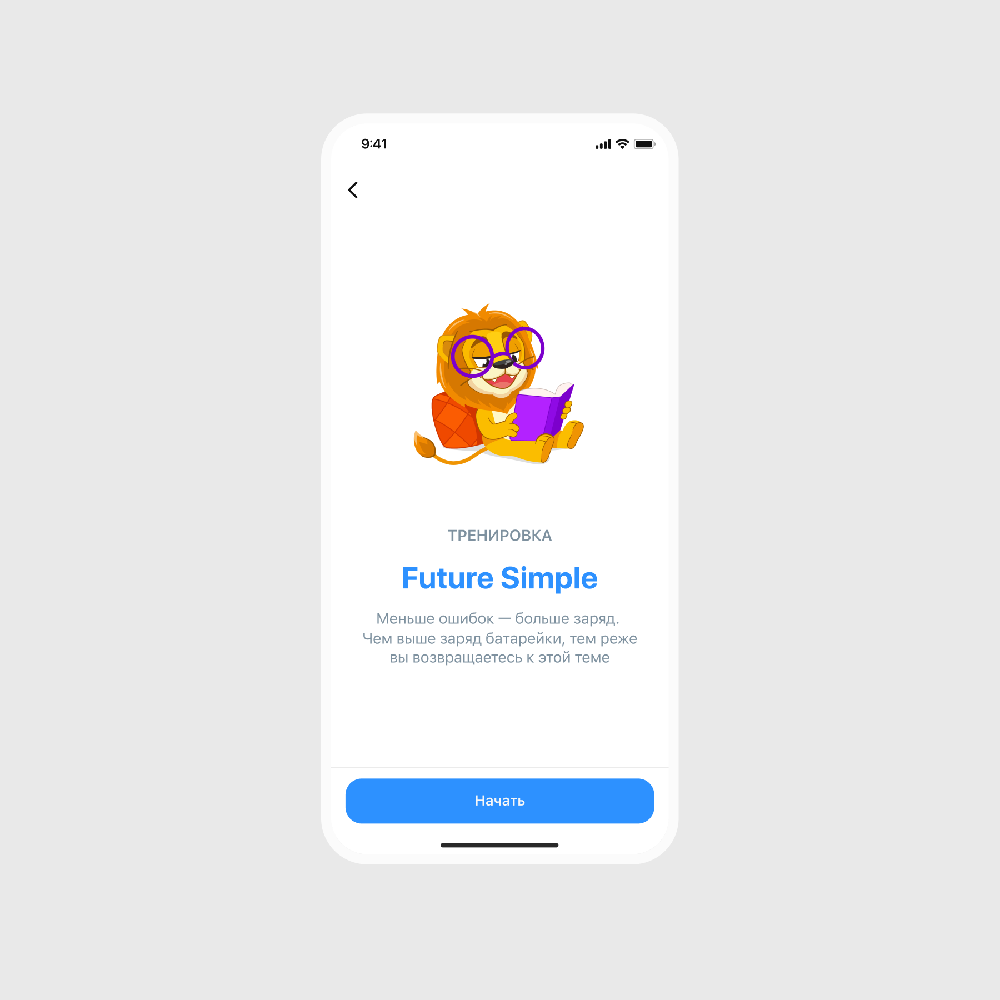
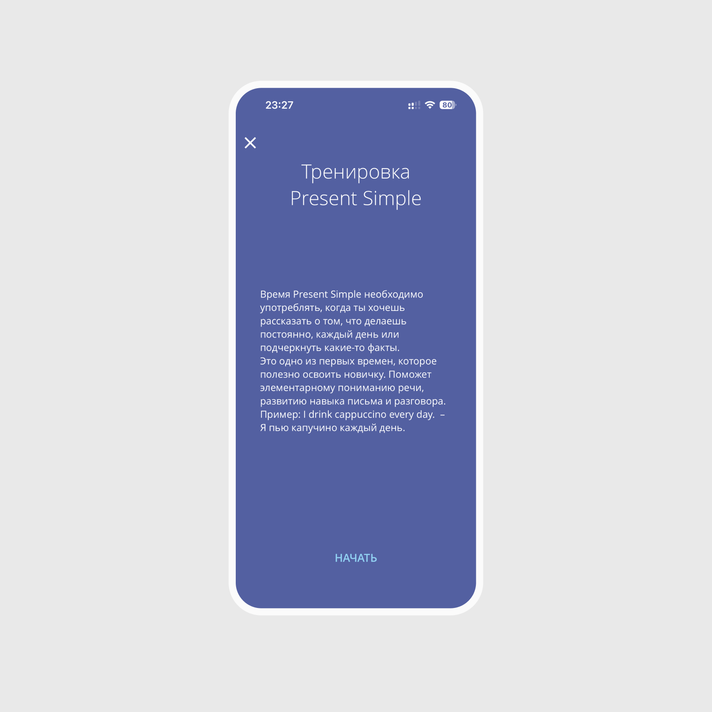
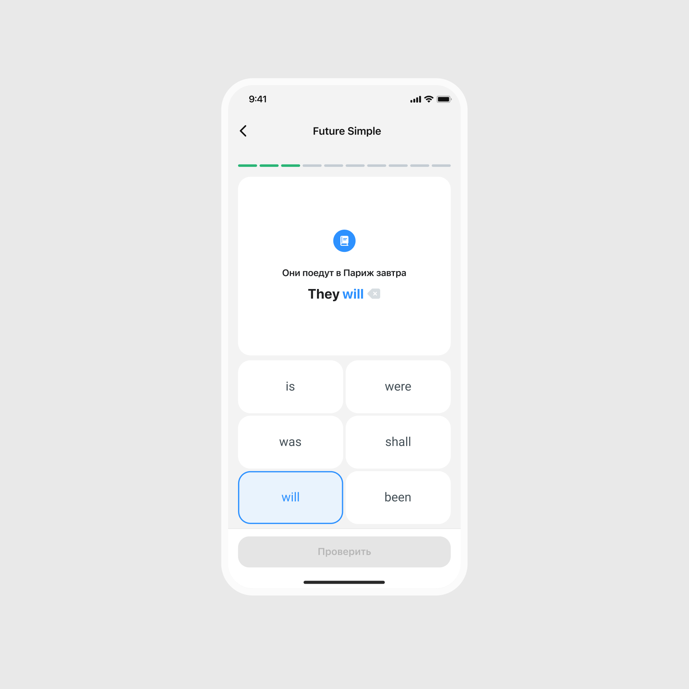
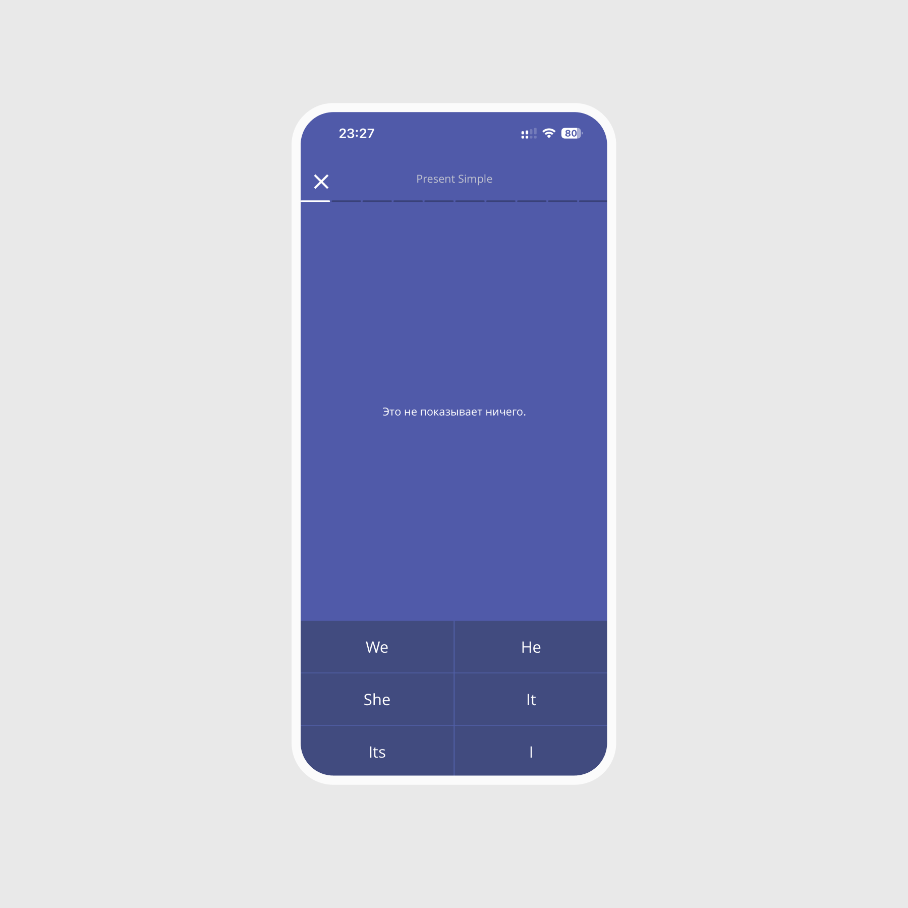

UX/UI CASE · 2026
Повышение вовлеченности пользователей через обновление пользовательского опыта, визуального языка и образовательного сценария.

LinguaLeo — платформа для изучения языков. В этом кейсе я работала над концептом редизайна грамматических тренировок: от исследования текущего опыта до проверки обновлённого прототипа.
Я занималась исследованием, дизайном экранов, прототипированием и тестированием решения. Работа охватывала весь путь: разобраться в проблемах текущего интерфейса, разработать обновлённые экраны, собрать прототип и проверить его на пользователях.
Визуальное обновление экранов тренировки Грамматики и объяснения правил для платформы iOS/Android. Разработка прототипа обновленной тренировки.
Устаревший визуал и табличный стиль, плохо отражен контент теории, хотя для пользователей он представляет большую ценность. Отсутствует чёткая иерархия и визуальный путь пользователя. Неочевидные элементы, пользователи «не видят» функционал.
Продукт обладает сильной образовательной базой, игровыми механиками и AI-интеграциями в тренировках. Основные точки роста: обновление UX, упрощение пользовательских сценариев и переосмысление ключевых механик.
Сравните исходный экран и концепт с маскотом и отдельной кнопкой начала тренировки.

Сравните исходное задание и концепт с карточками ответов и явной кнопкой проверки.


РЕЗУЛЬТАТЫ ПРОВЕРКИ ПРОТОТИПА
Модерируемое сравнительное юзабилити-тестирование помогло проверить понятность объяснений и удобство обновлённой тренировки.
Источник: результаты тестирования, описанные в этом кейсе. Это оценки прототипа, а не метрики работающего продукта. Данные об изменениях вовлечённости и эффективности обучения после запуска в кейсе не представлены.
→ ✅ Гипотеза подтверждена. Не менее 4 из 5 участников правильно понимали причину ошибки и положительно оценили объяснения (средняя оценка ≥ 4/5). Пользователи отметили, что объяснения помогают разобраться в причине ошибки, а не просто увидеть правильный ответ.
→ ✅ Гипотеза подтверждена. Пользователи положительно восприняли контроль над процессом проверки: возможность сначала подумать и перепроверить ответ повышала уверенность и делала обучение более осознанным.
→ 🟡 Гипотеза частично подтверждена. Средняя оценка удобства достигла целевого значения (≥ 4/5), однако тестирование выявило проблемы с пониманием отдельных механик (батарейка, интервальное повторение, отображение прогресса). Это говорит о том, что базовый UX улучшился, но интерфейс требует доработки.
→ 🟡 Гипотеза частично подтверждена. Пользователи положительно оценили эмоциональную составляющую интерфейса, однако внимание было сосредоточено преимущественно на выполнении сценариев. Существенного влияния маскота на восприятие обучения выявить не удалось, поэтому гипотеза требует дополнительной проверки на большей выборке.
Тестирование показало ценность объяснений ошибок и контроля над моментом проверки ответа. При этом обновлённая тренировка требует доработки отдельных механик: отображения прогресса, батарейки и интервального повторения.
Следующий шаг — уточнить эти сценарии и повторно проверить их на пользователях. Влияние маскота на вовлечённость также требует дополнительной проверки на большей выборке.